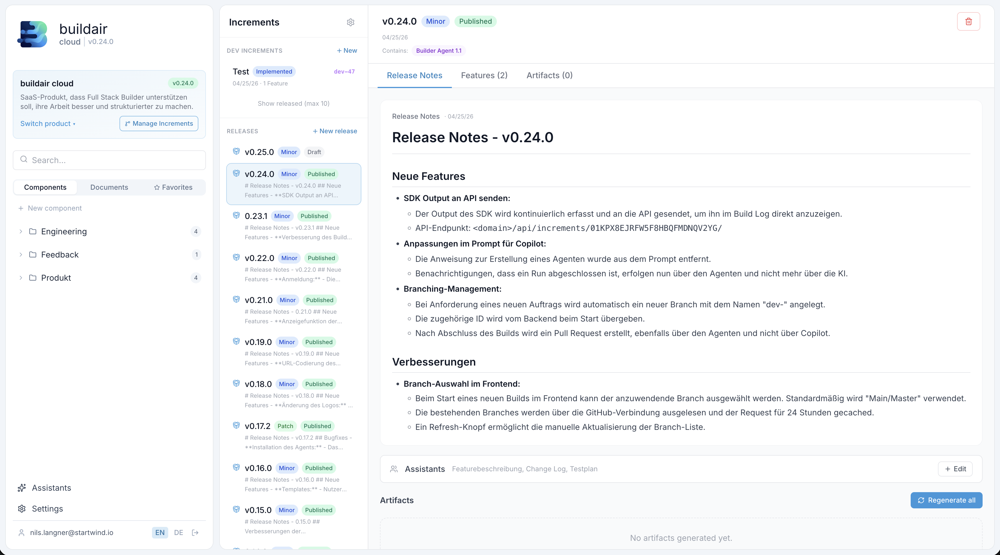
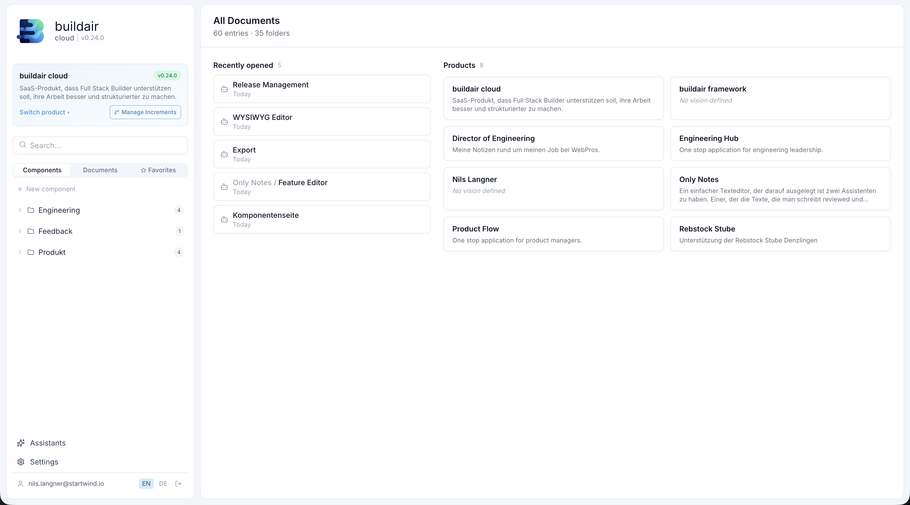
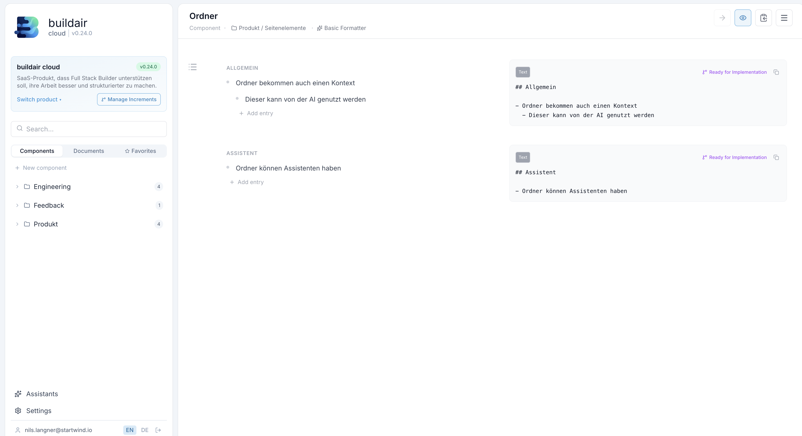

buildair cloud wraps your AI coding agent in real enterprise workflows git branching, pull requests, structured releases, and full audit trails. Not vibe coding. Engineered software.

Integrates with your stack
Senior engineers are skeptical of AI-generated code for a reason. It bypasses every process their team has spent years building. buildair cloud changes that.
Write how you think. Bullet points, rough ideas, a half-finished sentence buildair cloud turns it into structured, development-ready specs automatically.
No template, no ceremony. Write "user can filter orders by date range" and the AI assistant expands it into a full increment with acceptance criteria, technical context, and edge cases.
Every increment is structured to map directly onto a Jira ticket. Export individually or as a batch title, description, acceptance criteria all filled in. Ready to paste or integrate.
Developers review the structured spec before a single line of code is written. Less "that's not what I meant", more shipping the right thing first.
Build your own AI assistants and configure them exactly how your organisation works. Whether it's your internal ticket format, your tone of voice in release notes, or your review checklist — the assistant follows your rules, not a generic template.
Filters applied client-side. State in URL params for shareability.
buildair cloud doesn't replace how you work it accelerates it. PRs land in your inbox like any other contribution. You review, you merge, you ship.
Isolated branch, automated checks, PR opened. Review it in GitHub, request changes, merge when happy. The process your team already trusts.
The AI works from your component knowledge base your architecture, your patterns. No random choices, no mystery code style.
Live build log, versioned agent, PR diff, full audit trail. You know exactly what ran, when, and why. No black box.
The best engineers today are full-stack builders backend, frontend, infra, product, design thinking, all in one. Vibe coding tools are built for demos. buildair cloud is built for you.
Stop babysitting AI outputs. Define your component architecture once, let the agent execute on a real branch, review the PR, ship the release. Repeat every week. That's the full-stack builder loop.
Write specs in your knowledge base. The AI understands your architecture, not just a chat prompt.
The agent builds the feature on an isolated branch and opens a PR. You stay in flow.
Bundle features into versioned releases. Ship when you're ready. Every version traceable.
Define, build, review, release. The same workflow your team already knows now automated.
Write a structured feature spec in your component knowledge base. The AI understands your architecture, not just the current chat.
buildair cloud launches your GitHub Copilot agent on a dedicated branch. You watch the live build log. When done, a PR is opened.
Review the PR, mark the increment as implemented, bundle it into a versioned release, and ship. Every step logged, every release traceable. Then start again.
Every dev increment creates its own branch. Keeps main clean, parallel work safe, and history meaningful.
When the agent finishes building, a pull request is opened with proper title, description, and linked increment.
Group increments into versioned releases (major/minor/patch). Draft, publish, and track what shipped in each version.
Document your architecture once. The AI reads it every build consistent decisions, no context drift between sessions.
Watch the agent work in real time. Every line of SDK output streamed to the UI. No guessing what happened.
Every increment tracks who triggered it, which branch it used, when it was implemented, and which release it shipped in.
Build your own AI assistants and attach them to any component. Define exactly how they behave so every output matches your company's standards, tone, and technical conventions. One team uses them for release notes, another for writing Jira tickets, another for code review checklists.
Manage multiple products, each with their own components, documents, increments, and release history.
The builder agent runs on your infrastructure. Your code never leaves your GitHub. You control every deployment.
No new process to learn. buildair cloud fits into the workflows your team already has.
Dev increments move from draft → implemented → released. Bundle multiple features into a single versioned release with auto-generated release notes.
Structure your product knowledge in folders and components. The AI reads this context before every build your architecture decisions are never forgotten.

Define component behaviour in a structured, section-based editor. Each section becomes part of the AI's build context precise input, precise output.

Every line of output from the GitHub Copilot SDK is streamed to the UI. You always know what the agent is doing and you can close the tab and come back later.
The agent announces which version it is, connects to the API, and confirms which branch it's building on.
While the agent is working, the log shows an animated "thinking …" line so you always know it's active.
When the build finishes, the agent posts the result and the pull request URL directly into the log.
Simple per-user pricing. The Platform plan gives you the full workflow add the AI Builder when you're ready to automate.
Full product management platform increments, releases, knowledge base, and component specs. Bring your own AI agent.
Get startedEverything in Platform, plus we provide and host the AI build agent. Just click build.
Start free trialSelf-hosted deployment, SSO, compliance, dedicated support and custom SLA.
Talk to usJoin the early access programme free to start, no credit card required.